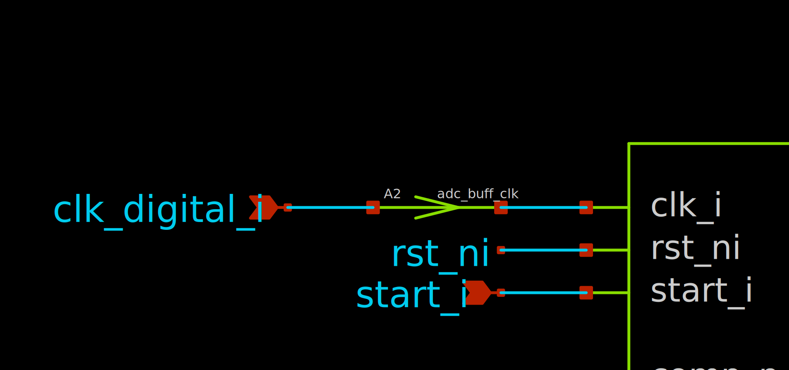

Bridges
What are bridges?¶
Bridges in ngspice define the transitions between the analog and digital domain. There are three different types of bridges:
| Bridge Type | Purpose | Description |
|---|---|---|
dac_bridge |
Digital-to-Analog | Node bridge at outputs of digital blocks |
adc_bridge |
Analog-to-Digital | Node bridge at inputs of digital blocks |
bidi_bridge |
Bidirectional | Allows two-way communication between analog and digital domains |
These bridges have a variety of configurable parameters, such as trigger voltage levels, rise/fall times and delays.
Automatically placed Bridges¶
By default, ngspice inserts some bridges automatically between analog and digital domains based on the circuit topology. The default bridges are:
- Digital-to-Analog:
.model auto_dac dac_bridge(out_low = 0 out_high = 'VCC') - Analog-to-Digital:
.model auto_adc adc_bridge(in_low = 'VCC/2' in_high = 'VCC/2') - Bidirectional:
.model auto_bidi bidi_bridge(out_high='VCC' in_low='VCC/2' in_high='VCC/2')
But they can be overwritten. I suggest using bidirectional bridges for all of them, since they have the most flexible parameters. You can change the default bridges as follows:
.model adc_buff_clk adc_bridge(in_low = 'vdd/2' in_high = 'vdd/2')
.control
.model adc_buff_clk adc_bridge(in_low='vdd/2' in_high='vdd/2')
.control
pre_set auto_bridge_d_out =
+ ( \".model auto_bridge_out bidi_bridge(direction=0 out_high='vdd' t_rise=0.2n t_fall=0.2n)\"
+ \"auto_bridge_out%d [ %s ] [ %s ] null auto_bridge_out\" )
pre_set auto_bridge_d_in =
+ ( \".model auto_bridge_in bidi_bridge(direction=1 in_low='vdd/3' in_high='vdd/3*2')\"
+ \"auto_bridge_in%d [ %s ] [ %s ] null auto_bridge_in\" )
.endc
auto_bridge_out: A bidirectional bridge for analog-to-digital conversion.auto_bridge_in: A bidirectional bridge for digital-to-analog conversion.adc_buff_clk: A bridge for clock signals in ADCs. If you have a hysteresis on the digital inputs, your signal may be undefined for some duration of the clock edge. Since one may not want this behavior in their clock inputs, we define a bridge model specifically for clock inputs.
Manually placing Bridges¶
Bridges can also be placed manually. The components for the bridges are located in the generic library and are called adc_bridge.sym and dac_bridge.sym.
We can take our clock buffer above as an example. Place the adc_bridge.sym directly in front of the clock pin of a digital design. Double-click on the bridge and change the model from adc_buff to adc_buff_clk. Now, the clock input should use the properties as described in the adc_buff_clk model.

{kind=link}